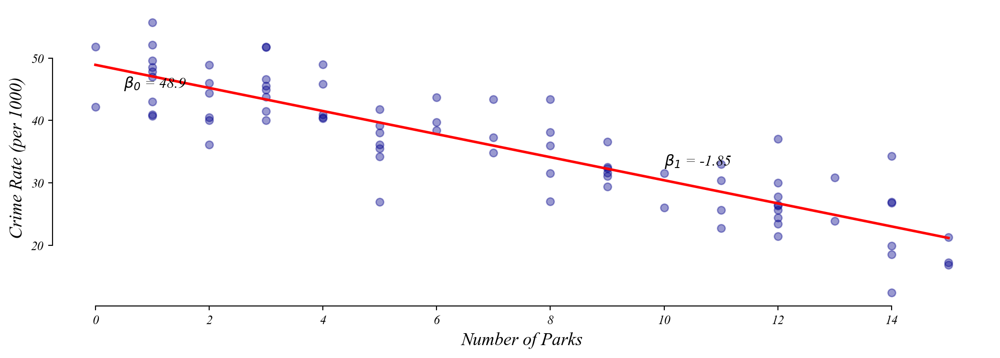
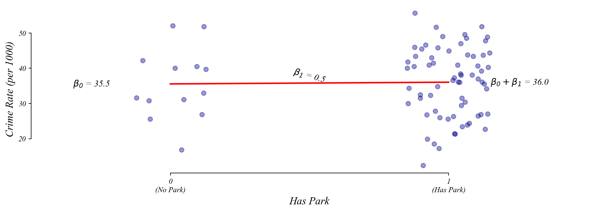
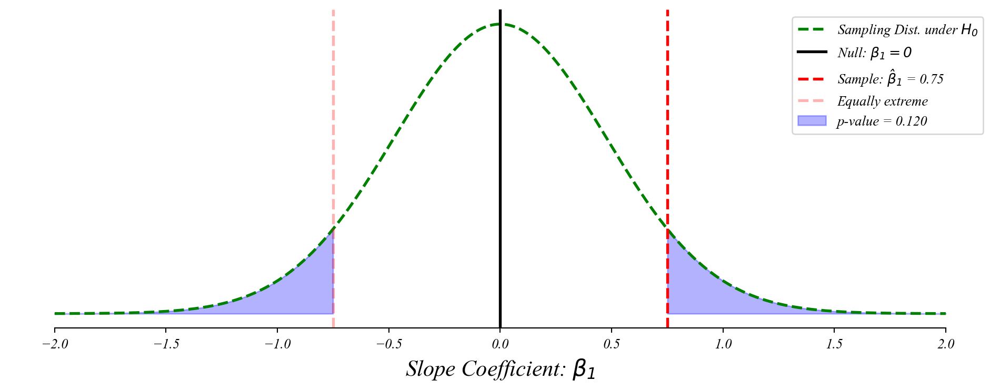
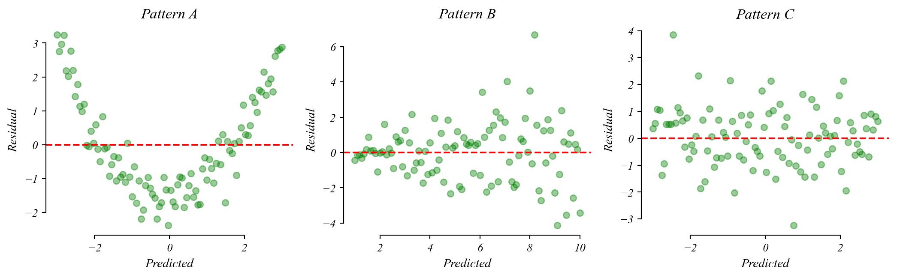
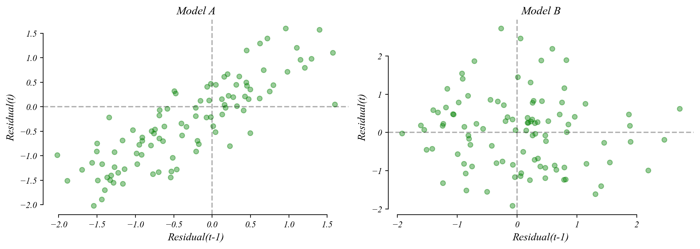

| num_parks | crime_rate | |
|---|---|---|
| 0 | 6 | 39.7 |
| 1 | 14 | 26.9 |
| 2 | 11 | 25.6 |
| 3 | 9 | 31.1 |
| 4 | 2 | 40.5 |
The economist’s data analysis skillset.
The bivariate GLM in four parts.
Today: practice problems in the style of the MiniExam.
A city wants to know if neighborhoods with more parks have lower crime rates.
| num_parks | crime_rate | |
|---|---|---|
| 0 | 6 | 39.7 |
| 1 | 14 | 26.9 |
| 2 | 11 | 25.6 |
| 3 | 9 | 31.1 |
| 4 | 2 | 40.5 |
a) How would you visualize the relationship between these two variables?
Scatterplot: num_parks on the x-axis, crime_rate on the y-axis.
b) Write down a model to test whether more parks means lower crime.
\[\text{crime_rate} = \beta_0 + \beta_1 \cdot \text{num_parks} + \varepsilon\]
A city wants to know if neighborhoods with more parks have lower crime rates.

c) What part of your model would indicate a relationship exists?
If \(\beta_1\) is significantly different from zero (small p-value), there is a relationship.
Same data. Now create a binary variable: has_park = 1 if num_parks > 0, else 0.
| num_parks | crime_rate | has_park | |
|---|---|---|---|
| 0 | 0 | 39.7 | 0 |
| 1 | 0 | 26.9 | 0 |
| 2 | 0 | 25.6 | 0 |
| 3 | 0 | 31.1 | 0 |
| 4 | 0 | 40.5 | 0 |
a) What is the variable type of has_park?
Binary categorical (0 or 1).
b) Visualize the relationship between has_park and crime_rate.
Strip plot or box plot with has_park on the x-axis and crime_rate on the y-axis.
Same data. Now create a binary variable: has_park = 1 if num_parks > 0, else 0.

c) Write down the model. What does \(\beta_0\) represent? What does \(\beta_1\) represent?
\[\text{crime_rate} = \beta_0 + \beta_1 \cdot \text{has_park} + \varepsilon\]
\(\beta_0\) = Mean crime rate in neighborhoods without parks (x = 0).
\(\beta_1\) = Difference in mean crime rate (has park minus no park).
What if we flip the coding?
d) If we instead coded no_park = 1 for no park, 0 for has park, what changes?
\(\beta_0\) is ALWAYS the mean of the group coded as 0.
\(\beta_1\) is ALWAYS the difference (group 1 minus group 0).
A researcher studies whether hours of sleep predict test scores using 150 students.
\[\text{test_score} = \beta_0 + \beta_1 \cdot \text{hours_sleep} + \varepsilon\]
coef std err t P>|t| [0.025 0.975]
------------------------------------------------------------------------------
Intercept 42.30 5.100 8.294 0.000 32.22 52.38
hours_sleep 5.80 0.720 8.056 0.000 4.38 7.22
------------------------------------------------------------------------------a) Interpret the intercept (42.30) in context.
A student who sleeps 0 hours is predicted to score 42.3 points. (Not meaningful.)
b) Interpret the slope (5.80) in context.
Each additional hour of sleep is associated with a 5.8 point increase in test score.
A researcher studies whether hours of sleep predict test scores using 150 students.
\[\text{test_score} = \beta_0 + \beta_1 \cdot \text{hours_sleep} + \varepsilon\]
coef std err t P>|t| [0.025 0.975]
------------------------------------------------------------------------------
Intercept 42.30 5.100 8.294 0.000 32.22 52.38
hours_sleep 5.80 0.720 8.056 0.000 4.38 7.22
------------------------------------------------------------------------------c) What is the null hypothesis for the slope coefficient?
\(H_0: \beta_1 = 0\) or hours of sleep has no effect on test scores.
d) What test score would the model predict for a student who sleeps 8 hours?
\(\hat{y} = 42.3 + 5.8 \times 8 = 88.7\) points.
Now consider the experience and wages example from the MiniExam demo.
coef std err t P>|t| [0.025 0.975]
------------------------------------------------------------------------------
Intercept 12.50 1.200 10.417 0.000 10.13 14.87
experience 0.75 0.478 1.570 0.120 -0.20 1.70
------------------------------------------------------------------------------a) Draw the sampling distribution of \(\beta_1\) under the null hypothesis.

Step by step: how to draw this on the exam.
A researcher collects GPA data from 100 students.
| on_campus | gpa | |
|---|---|---|
| 0 | 0 | 3.09 |
| 1 | 0 | 2.99 |
| 2 | 0 | 2.54 |
| 3 | 1 | 2.91 |
| 4 | 1 | 2.61 |
a) If we code on_campus = 1 for yes, 0 for no, what does \(\beta_0\) represent?
Mean GPA for off-campus students (the x = 0 group).
b) What does \(\beta_1\) represent?
Difference in mean GPA: on-campus minus off-campus.
What if we flip the coding?
c) Now code off_campus = 1 for off-campus, 0 for on-campus. What changes?
\(\beta_0\) is ALWAYS the mean of the group coded as 0.
\(\beta_1\) is ALWAYS the difference (group 1 minus group 0).
Which model assumption does each pattern suggest is violated?

Which lag plot shows autocorrelation?

Autocorrelation means the model’s errors follow a pattern over time. Standard errors become unreliable.
The core skills.